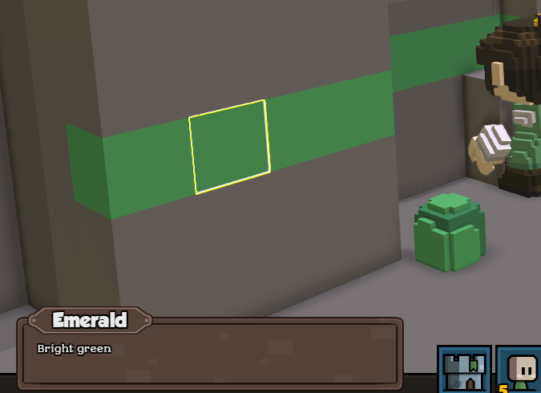

Ores and other resources can drop from mining. We can create our own resource veins that will spawn inside the terrain, and make them drop more of a certain resource.
First, create a mining resource. This can be anything, and we'll use it as a drop from mining. You can copy an existing resource from
stonehearth/entities/resources.In our example, we copied
lump_of_coaland renamed it toemerald:{ "mixins": "stonehearth:mixins:item_properties", "type": "entity", "components": { "model_variants": { "default": { "models": [ "file(emerald.qb)" ] } } }, "entity_data": { "stonehearth:net_worth": { "value_in_gold": 1, "rarity": "common", "shop_info": { "buyable": true, "sellable": true, "shopkeeper_level": 1, "shopkeeper_type": "caravan" } }, "stonehearth:catalog": { "display_name": "i18n(mineral_mod:entities.resources.emerald.display_name)", "description": "i18n(mineral_mod:entities.resources.emerald.description)", "icon": "file(emerald.png)", "is_item": true, "category": "resources", "material_tags": ["stockpile_ore", "emerald" "resource", "gem"] }, "stonehearth:appeal": { "appeal": -2 } } }The model will be used for the iconic/restockable resource. If this resource is going to be used for building, you can add the stacks inside the components:
"stonehearth:stacks": { "max_stacks": 60 }That way the resource will last for N blocks while building with it. You would also need to add your resource to the list of building resources for this to work.
Make sure to rename
coal(or whatever resource name) in the material_tags to something unique and that it has a valid storage filter.Add an alias for your resource in the manifest:
"aliases" : { "resources:emerald": "file(entities/resources/emerald)" }Make your resource be dropped from mining:
To do this, we need to add our resource to the
stonehearth/services/server/mining/mining_loot_tables.jsonfile via a mixinto:"mixintos" : { "stonehearth:mining:base_loot_table" : "file(mixintos/mining_loot_tables_mixinto.json)" }Our mixinto file would look like this:
{ "mineable_blocks": { "rock": { "entries": { "default": { "items": { "emerald": { "uri": "minerals_mod:resources:emerald", "weight": 50 } } } } }, "emerald": { "entries": { "default": { "num_rolls": 1, "items": { "none": { "uri": "", "weight": 100 }, "gem": { "uri": "minerals_mod:resources:emerald", "weight": 50 } } } } } } }This is a loot table that lists terrain types and the items that can drop when we mine them.
This bit of data is telling us to add our resource to the "rock" loot table and give it a weight of 50. Check the numbers in
stonehearth/services/server/mining/mining_loot_tables.jsonbefore adjusting this weight. If your number is too low, your resource will not drop much (if at all). If your number is too high, it will outweight every other resource and nothing else will drop![1]There are other loot tables in the
mining_loot_tablesthat you can add your resource to if you so desire. Rock is just the most logical one to start with.There exist files in the biomes folder called
temperate_mining_loot_table.json,desert_mining_loot_table.jsonandarctic_mining_loot_table.json. These files are for any additional mining loot tables you want to add that are specific to that biome type only. You can mixinto to them in this same way to make your resource dependent on the biome. The generic one we used will be applied for all the biomes. [1]The keys inside "mineable_blocks" correspond to values from the "kind" keys in
stonehearth/data/terrain/terrain_blocks.json. That way the resources will drop no matter which color of rock, grass, etc we mine.Add your resource to the terrain blocks:
Since we added "emerald" as an entry in "mineable_blocks", we need to ensure that a terrain type called "emerald" exists. Our mixinto to
terrain_blocks.jsonlooks like this:{ "block_types" : { "emerald" : { "tag" : 550, "kind" : "emerald" } }, "selectable_kinds" : { "emerald" : "mineral_mod:terrain:ui:emerald" } }We add a new key called "emerald", assign a tag (which is a unique number, check the other ones in terrain_blocks.json to avoid duplicates) to it, and also a "kind" which is our entry name in "mineable_blocks". The "kind" can be a different string than the main key string.
We also add it inside the "selectable_kinds" section. This is so that we can click on our ore vein and its name will be shown in the unit frame. The alias it points to corresponds to this file:
{ "mixins": "stonehearth/entities/terrain/ui/ore_block/ore_block.json", "components": {}, "entity_data": { "stonehearth:catalog": { "display_name": "i18n(mineral_mod:entities.terrain.ui.emerald_block.display_name)", "description": "i18n(mineral_mod:entities.terrain.ui.emerald_block.description)" } } }Make sure the "mixins" point to the stonehearth mod and adjust the name and description of our terrain type.
Indicate the color for your new terrain block type.
Currently this has to be done via a mixinto to the biomes generation_data files, which means we'll need to inject this mixinto for all the biomes where we'll spawn our ore vein, otherwise its color will be a default one (an almost black red):
"mixintos" : { "stonehearth:mining:base_loot_table" : "file(mixintos/mining_loot_tables_mixinto.json)", "stonehearth/data/biome/temperate_generation_data.json" : "file(data/biome/ore_color_mixinto.json)", "stonehearth/data/biome/desert_generation_data.json" : "file(data/biome/ore_color_mixinto.json)", "stonehearth/data/biome/arctic_generation_data.json" : "file(data/biome/ore_color_mixinto.json)" }The mixinto will look like this:
{ "palettes": { "spring": { "emerald": "#4EA85A" }, "summer": { "emerald": "#4EA85A" }, "autumn": { "emerald": "#4EA85A" }, "winter": { "emerald": "#4EA85A" } } }We add an entry with our terrain type (the main keys inside "block_types" from terrain_blocks.json) for each season, and link it to the color that we want for our ore vein in hexadecimal format. Terrain blocks don't admit custom render materials, they will all use the same shader (hardcoded in the C++ side). Water has a separate renderer.
 We can add mixintos to files from other mods even if the players don't have those mods installed. Warnings that those files couldn't be found will be written to the stonehearth.log, but won't pop up in the game. If there are too many warnings from several mods, the game might take a bit longer to start.
We can add mixintos to files from other mods even if the players don't have those mods installed. Warnings that those files couldn't be found will be written to the stonehearth.log, but won't pop up in the game. If there are too many warnings from several mods, the game might take a bit longer to start.Finally, we can create our ore vein and add it as a static scenario so that it spawns in the terrain.
Copy
stonehearth/scenarios/static/terrain/coal_vein(or any other ore vein), rename it and edit it:{ "mixins" : "stonehearth/scenarios/static/terrain/ore_vein/ore_vein.json", "name" : "emerald_vein", "kind" : "emerald", "weight" : 75 }Make sure the "mixins" point to the stonehearth mod. The "weight" will be used together with the other ore veins, so check the other files so that your ore has enough chances to spawn.
Other fields we can include in this JSON file that have defaults in
ore_vein.jsonare:habitat_types" : ["mountains"] -- will make it spawn only in the habitats declared here. Normally we want ore veins to spawn only in the "mountains" habitat.
"size" : { "width" : 88, "length" : 88 } -- this is the default size that the scenario will take when calculating its spawn location.
"unique" : false -- more than one vein of this resource type can spawn in the same map.
"data" : {} -- there are several properties we can customize here, and will be used to create the veins in
stonehearth/services/server/mining/ore_generator.lua. These are their default values:- "num_veins_min" : 2 -- minimum number of veins of this type that will spawn in the map.
- "num_veins_max" : 4 -- maximum number of veins of this type that will spawn in the map. The total number is random between min and max.
- "vein_length_min" : 44 -- minimum length for the vein.
- "vein_length_max" : 72 -- maximum length for the vein. The final length will be a random number of blocks between min and max.
- "vein_radius" : 2 -- the radius of the veins (so total width of the veins is 4 blocks by default).
- "mother_lode_radius_min" : 3 -- minimum radius for the mother lode.
- "mother_lode_radius_max" : 5 -- maximum radius for the mother lode. Final radius will be random between min and max, so the final width will be double of that.
Add the mixinto to the scenario index:
"mixintos" : { "stonehearth:mining:base_loot_table" : "file(mixintos/mining_loot_tables_mixinto.json)", "stonehearth/data/biome/temperate_generation_data.json" : "file(data/biome/ore_color_mixinto.json)", "stonehearth/data/biome/desert_generation_data.json" : "file(data/biome/ore_color_mixinto.json)", "stonehearth/data/biome/arctic_generation_data.json" : "file(data/biome/ore_color_mixinto.json)", "stonehearth:scenarios:scenario_index" : "file(scenarios/scenario_index.json)" }The mixinto will look like this:
{ "static" : { "scenarios" : [ "file(static/terrain/emerald_vein)" ] } }Test that your ore vein appears in the map.
This might take a while since the placement is random. Promote a combat unit with debugtools and make them run around the edge of a mountain until you spot a vein of your resource. Then click on it to check the unit frame, and order your hearthlings to mine it to see that your resource is being dropped. Also mine rock or whatever other terrain type you used in the mining loot table and check that the drops are working. 
References
[1]: From https://discourse.stonehearth.net/t/tutorial-adding-mining-resources-updated-for-alpha-18/16994
Older tutorial: https://discourse.stonehearth.net/t/tutorial-adding-mining-resources/10658